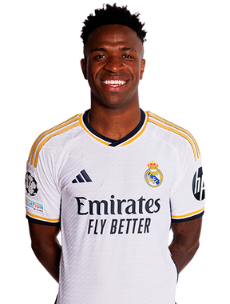
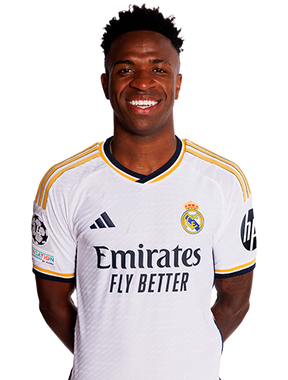
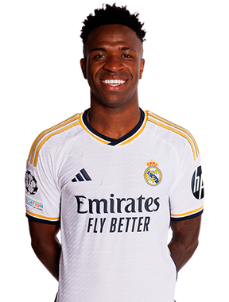
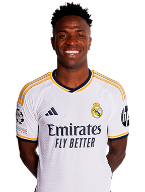
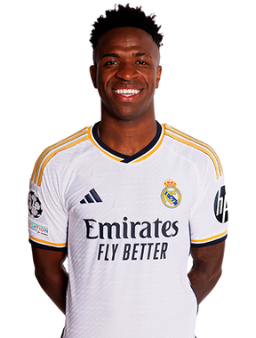

Juego de ¿Quién es quién?
Preguntas posibles:
¿Tiene el pelo largo?
¿Tiene los ojos azules?
¿Es portero?
¿Tiene barba?
¿Es delantero?
¿Es defensa?
¿Es mediocentro?
¿Es rubio?
Escribe una pregunta sobre el personaje en el cuadro de texto a continuación:
Preguntar


 


